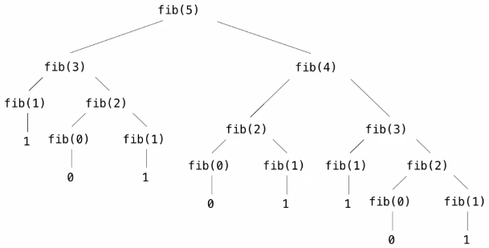

Recursion
Table of Contents
1. Recursive Functions
A function is called recursive if the body of that function calls itself, either directly or indirectly. This means that when you call a recursive function, executing the body of that function may require applying that function again.
Recursive functions often have two parts: a base case and a recursive case. The base case is evaluated without recursive calls, and is usually used to break out of recursion. The recursive case is evaluated with recursive calls, which makes progress towards the base case.
Example: Factorial
We can define the factorial function recursively like so:
def fact(n):
# base case
if n == 1 or n == 0:
return 1
# recursive case
return n * fact(n - 1)
Example: Sum of list
We can take advantage of list slicing to implement a recurisve function that sums all the elements in a list:
def sum_list(s):
if len(s) == 0:
return 0
else:
return s[0] + sum_list(s[1:])
1.1. Verifying Recursive Functions
To verify that a recursive function `func` will do what it is supposed to do, you can follow the following steps:
- Verify the base case.
- Treat `func` as a functional abstraction, assuming it will do what it is supposed to do.
- Verify that `func(n)` is correct, assuming that `func(n - 1)` is correct.
1.2. Mutually Recursive Functions
Two functions f and g are mutually recursive if f calls g and g calls f.
Example: Luhn algorithm
The Luhn algorithm is used to verify credit card numbers using a check digit, which is the rightmost digit. It consists of the following steps:
- From the rightmost digit (the check digit) moving left, double the value of every second digit; if the doubled value is greater than 9, then sum the digits of the doubled value.
- Take the sum of all the digits, which is called the Luhn sum.
- The Luhn sum of a valid credit card number will always be a multiple of 10.
def sum_digits(n):
if n < 10:
return n
else:
all_but_last, last = n // 10, n % 10
return sum_digits(all_but_last) + last
def luhn_sum(n):
if n < 10:
return n
else:
all_but_last, last = n // 10, n % 10
return luhn_sum_double(all_but_last) + last
def luhn_sum_double(n):
all_but_last, last = n // 10, n % 10
luhn_digit = sum_digits(2 * last)
if n < 10:
return luhn_digit
else:
return luhn_sum(all_but_last) + luhn_digit
Here, luhn_sum and luhn_sum_double are mutually recursive.
2. Recursion and Iteration
We can often convert recursion to iteration, as iteration is just a special case of recursion. The main thing we need to keep in mind is to figure out what state must be maintained by the iterative function.
Example: Sum digits
Here is the recursive version of sum_digits, which takes in a number n and returns the sum of its digits:
def sum_digits(n):
if n < 10:
return n
else:
all_but_last, last = n // 10, n % 10
return sum_digits(all_but_last) + last
We want to write an iterative version of this function, sum_digits_iter. In this case, the state we need to keep track of is the digit sum so far as we iterate:
def sum_digits_iter(n):
digit_sum = 0
while n > 0:
n, last = n // 10, n % 10
digit_sum = digit_sum + last
return digit_sum
We can also convert iteration to recursion. In this case, we can pass in the state of an iteration as arguments to a recursive function. In the sum_digits example, to convert the iterative version to a recursive version, we can pass in the digit_sum state as an argument to a recursive call, sum_digits_rec(n, digit_sum).
3. Tree Recursion
When the body of a function that makes multiple recursive calls is executed, we have tree recursion. This is because the computational process of a function that makes multiple recursive calls evolves into a tree structure. For example, for the fib function in the below example that calculates Fibonacci numbers, we can see that a call to fib(5) has the following call tree:

We then traverse the tree in a depth-first manner, until we have computed all the necessary functions for fib(5).
Example: Fibonacci numbers
We can use a function that makes multiple recursive calls to find the n-th Fibonacci number:
def fib(n):
if n == 0:
return 0
elif n == 1:
return 1
else:
return fib(n - 2) + fib(n - 1)